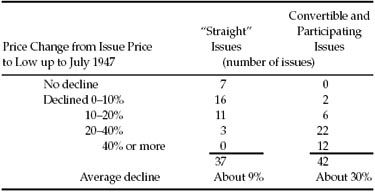
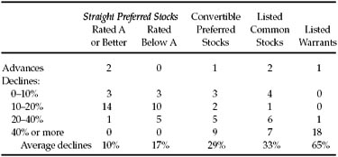
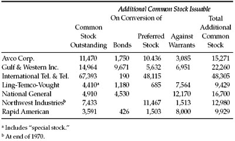
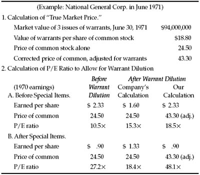

C onvertible bonds and preferred stocks have been taking on a predominant importance in recent years in the field of senior financing. As a parallel development, stock-option warrants—which are long-term rights to buy common shares at stipulated prices—have become more and more numerous. More than half the preferred issues now quoted in the Standard & Poor’s Stock Guide have conversion privileges, and this has been true also of a major part of the corporate bond financing in 1968–1970. There are at least 60 different series of stock-option warrants dealt in on the American Stock Exchange. In 1970, for the first time in its history, the New York Stock Exchange listed an issue of long-term warrants, giving rights to buy 31,400,000 American Tel. & Tel. shares at $52 each. With “Mother Bell” now leading that procession, it is bound to be augmented by many new fabricators of warrants. (As we shall point out later, they are a fabrication in more than one sense.) *
In the overall picture the convertible issues rank as much more important than the warrants, and we shall discuss them first. There are two main aspects to be considered from the standpoint of the investor. First, how do they rank as investment opportunities and risks? Second, how does their existence affect the value of the related common-stock issues?
Convertible issues are claimed to be especially advantageous to both the investor and the issuing corporation. The investor receives the superior protection of a bond or preferred stock, plus the opportunity to participate in any substantial rise in the value of the common stock. The issuer is able to raise capital at a moderate interest or preferred dividend cost, and if the expected prosperity materializes the issuer will get rid of the senior obligation by having it exchanged into common stock. Thus both sides to the bargain will fare unusually well.
Obviously the foregoing paragraph must overstate the case somewhere, for you cannot by a mere ingenious device make a bargain much better for both sides. In exchange for the conversion privilege the investor usually gives up something important in quality or yield, or both. 1 Conversely, if the company gets its money at lower cost because of the conversion feature, it is surrendering in return part of the common shareholders’ claim to future enhancement. On this subject there are a number of tricky arguments to be advanced both pro and con. The safest conclusion that can be reached is that convertible issues are like any other form of security, in that their form itself guarantees neither attractiveness nor unattractiveness. That question will depend on all the facts surrounding the individual issue. *
We do know, however, that the group of convertible issues floated during the latter part of a bull market are bound to yield unsatisfactory results as a whole. (It is at such optimistic periods, unfortunately, that most of the convertible financing has been done in the past.) The poor consequences must be inevitable, from the timing itself, since a wide decline in the stock market must invariably make the conversion privilege much less attractive—and often, also, call into question the underlying safety of the issue itself. † As a group illustration we shall retain the example used in our first edition of the relative price behavior of convertible and straight (nonconvertible) preferreds offered in 1946, the closing year of the bull market preceding the extraordinary one that began in 1949.
TABLE 16-1 Price Record of New Preferred-Stock Issues Offered in 1946

A comparable presentation is difficult to make for the years 1967–1970, because there were virtually no new offerings of nonconvertibles in those years. But it is easy to demonstrate that the average price decline of convertible preferred stocks from December 1967 to December 1970 was greater than that for common stocks as a whole (which lost only 5%). Also the convertibles seem to have done quite a bit worse than the older straight preferred shares during the period December 1968 to December 1970, as is shown by the sample of 20 issues of each kind in Table 16-2. These comparisons would demonstrate that convertible securities as a whole have relatively poor quality as senior issues and also are tied to common stocks that do worse than the general market except during a speculative upsurge. These observations do not apply to all convertible issues, of course. In the 1968 and 1969 particularly, a fair number of strong companies used convertible issues to combat the inordinately high interest rates for even first-quality bonds. But it is noteworthy that in our 20-stock sample of convertible preferreds only one showed an advance and 14 suffered bad declines. *
TABLE 16-2 Price Record of Preferred Stocks, Common Stocks, and Warrants, December 1970 versus December 1968
(Based on Random Samples of 20 Issues Each)

(Standard & Poor’s composite index of 500 common stocks declined 11.3%.)
The conclusion to be drawn from these figures is not that convertible issues are in themselves less desirable than nonconvertible or “straight” securities. Other things being equal, the opposite is true. But we clearly see that other things are not equal in practice and that the addition of the conversion privilege often—perhaps generally—betrays an absence of genuine investment quality for the issue.
It is true, of course, that a convertible preferred is safer than the common stock of the same company—that is to say, it carries smaller risk of eventual loss of principal. Consequently those who buy new convertibles instead of the corresponding common stock are logical to that extent. But in most cases the common would not have been an intelligent purchase to begin with, at the ruling price, and the substitution of the convertible preferred did not improve the picture sufficiently. Furthermore, a good deal of the buying of convertibles was done by investors who had no special interest or confidence in the common stock—that is, they would never have thought of buying the common at the time—but who were tempted by what seemed an ideal combination of a prior claim plus a conversion privilege close to the current market. In a number of instances this combination has worked out well, but the statistics seem to show that it is more likely to prove a pitfall.
In connection with the ownership of convertibles there is a special problem which most investors fail to realize. Even when a profit appears it brings a dilemma with it. Should the holder sell on a small rise; should he hold for a much bigger advance; if the issue is called—as often happens when the common has gone up considerably—should he sell out then or convert into and retain the common stock? *
Let us talk in concrete terms. You buy a 6% bond at 100, convertible into stock at 25—that is, at the rate of 40 shares for each $1,000 bond. The stock goes to 30, which makes the bond worth at least 120, and so it sells at 125. You either sell or hold. If you hold, hoping for a higher price, you are pretty much in the position of a common shareholder, since if the stock goes down your bond will go down too. A conservative person is likely to say that beyond 125 his position has become too speculative, and therefore he sells and makes a gratifying 25% profit.
So far, so good. But pursue the matter a bit. In many cases where the holder sells at 125 the common stock continues to advance, carrying the convertible with it, and the investor experiences that peculiar pain that comes to the man who has sold out much too soon. The next time, he decides to hold for 150 or 200. The issue goes up to 140 and he does not sell. Then the market breaks and his bond slides down to 80. Again he has done the wrong thing.
Aside from the mental anguish involved in making these bad guesses—and they seem to be almost inevitable—there is a real arithmetical drawback to operations in convertible issues. It may be assumed that a stern and uniform policy of selling at 25% or 30% profit will work out best as applied to many holdings. This would then mark the upper limit of profit and would be realized only on the issues that worked out well. But, if—as appears to be true—these issues often lack adequate underlying security and tend to be floated and purchased in the latter stages of a bull market, then a goodly proportion of them will fail to rise to 125 but will not fail to collapse when the market turns downward. Thus the spectacular opportunities in convertibles prove to be illusory in practice, and the overall experience is marked by fully as many substantial losses—at least of a temporary kind—as there are gains of similar magnitude.
Because of the extraordinary length of the 1950–1968 bull market, convertible issues as a whole gave a good account of themselves for some 18 years. But this meant only that the great majority of common stocks enjoyed large advances, in which most convertible issues were able to share. The soundness of investment in convertible issues can only be tested by their performance in a declining stock market—and this has always proved disappointing as a whole. *
In our first edition (1949) we gave an illustration of this special problem of “what to do” with a convertible when it goes up. We believe it still merits inclusion here. Like several of our references it is based on our own investment operations. We were members of a “select group,” mainly of investment funds, who participated in a private offering of convertible 4½% debentures of Eversharp Co. at par, convertible into common stock at $40 per share. The stock advanced rapidly to 65½, and then (after a three-for-two split) to the equivalent of 88. The latter price made the convertible debentures worth no less than 220. During this period the two issues were called at a small premium; hence they were practically all converted into common stock, which was retained by a number of the original investment-fund buyers of the debentures. The price promptly began a severe decline, and in March 1948 the stock sold as low as 7 3/8. This represented a value of only 27 for the debenture issues, or a loss of 75% of the original price instead of a profit of over 100%.
The real point of this story is that some of the original purchasers converted their bonds into the stock and held the stock through its great decline. In so doing they ran counter to an old maxim of Wall Street, which runs: “Never convert a convertible bond.” Why this advice? Because once you convert you have lost your strategic combination of prior claimant to interest plus a chance for an attractive profit. You have probably turned from investor into speculator, and quite often at an unpropitious time (because the stock has already had a large advance). If “Never convert a convertible” is a good rule, how came it that these experienced fund managers exchanged their Eversharp bonds for stock, to their subsequent embarrassing loss? The answer, no doubt, is that they let themselves be carried away by enthusiasm for the company’s prospects as well as by the “favorable market action” of the shares. Wall Street has a few prudent principles; the trouble is that they are always forgotten when they are most needed. * Hence that other famous dictum of the old-timers: “Do as I say, not as I do.”
Our general attitude toward new convertible issues is thus a mistrustful one. We mean here, as in other similar observations, that the investor should look more than twice before he buys them. After such hostile scrutiny he may find some exceptional offerings that are too good to refuse. The ideal combination, of course, is a strongly secured convertible, exchangeable for a common stock which itself is attractive, and at a price only slightly higher than the current market. Every now and then a new offering appears that meets these requirements. By the nature of the securities markets, however, you are more likely to find such an opportunity in some older issue which has developed into a favorable position rather than in a new flotation. (If a new issue is a really strong one, it is not likely to have a good conversion privilege.)
The fine balance between what is given and what is withheld in a standard-type convertible issue is well illustrated by the extensive use of this type of security in the financing of American Telephone & Telegraph Company. Between 1913 and 1957 the company sold at least nine separate issues of convertible bonds, most of them through subscription rights to shareholders. The convertible bonds had the important advantage to the company of bringing in a much wider class of buyers than would have been available for a stock offering, since the bonds were popular with many financial institutions which possess huge resources but some of which were not permitted to buy stocks. The interest return on the bonds has generally been less than half the corresponding dividend yield on the stock—a factor that was calculated to offset the prior claim of the bondholders. Since the company maintained its $9 dividend rate for 40 years (from 1919 to the stock split in 1959) the result was the eventual conversion of virtually all the convertible issues into common stock. Thus the buyers of these convertibles have fared well through the years—but not quite so well as if they had bought the capital stock in the first place. This example establishes the soundness of American Telephone & Telegraph, but not the intrinsic attractiveness of convertible bonds. To prove them sound in practice we should need to have a number of instances in which the convertible worked out well even though the common stock proved disappointing. Such instances are not easy to find. *
Effect of Convertible Issues on the Status of the Common Stock
In a large number of cases convertibles have been issued in connection with mergers or new acquisitions. Perhaps the most striking example of this financial operation was the issuance by the NVF Corp. of nearly $100,000,000 of its 5% convertible bonds (plus warrants) in exchange for most of the common stock of Sharon Steel Co. This extraordinary deal is discussed below pp. 429–433. Typically the transaction results in a pro forma increase in the reported earnings per share of common stock; the shares advance in response to their larger earnings, so-called, but also because the management has given evidence of its energy, enterprise, and ability to make more money for the shareholders. * But there are two offsetting factors, one of which is practically ignored and the other entirely so in optimistic markets. The first is the actual dilution of the current and future earnings on the common stock that flows arithmetically from the new conversion rights. This dilution can be quantified by taking the recent earnings, or assuming some other figures, and calculating the adjusted earnings per share if all the convertible shares or bonds were actually converted. In the majority of companies the resulting reduction in per-share figures is not significant. But there are numerous exceptions to this statement, and there is danger that they will grow at an uncomfortable rate. The fast-expanding “conglomerates” have been the chief practitioners of convertible legerdemain. In Table 16-3 we list seven companies with large amounts of stock issuable on conversions or against warrants. †
Indicated Switches from Common into Preferred Stocks
For decades before, say, 1956, common stocks yielded more than the preferred stocks of the same companies; this was particularly true if the preferred stock had a conversion privilege close to the market. The reverse is generally true at present. As a result there are a considerable number of convertible preferred stocks which are clearly more attractive than the related common shares. Owners of the common have nothing to lose and important advantages to gain by switching from their junior shares into the senior issue.
TABLE 16-3 Companies with Large Amounts of Convertible Issues and Warrants at the End of 1969 (Shares in Thousands)

EXAMPLE : A typical example was presented by Studebaker-Worthington Corp. at the close of 1970. The common sold at 57, while the $5 convertible preferred finished at 87½. Each preferred share is exchangeable for 1½ shares of common, then worth 85½. This would indicate a small money difference against the buyer of the preferred. But dividends are being paid on the common at the annual rate of $1.20 (or $1.80 for the 1½ shares), against the $5 obtainable on one share of preferred. Thus the original adverse difference in price would probably be made up in less than a year, after which the preferred would probably return an appreciably higher dividend yield than the common for some time to come. But most important, of course, would be the senior position that the common shareholder would gain from the switch. At the low prices of 1968 and again in 1970 the preferred sold 15 points higher than 1½ shares of common. Its conversion privilege guarantees that it could never sell lower than the common package. 2
Stock-Option Warrants
Let us mince no words at the outset. We consider the recent development of stock-option warrants as a near fraud, an existing menace, and a potential disaster. They have created huge aggregate dollar “values” out of thin air. They have no excuse for existence except to the extent that they mislead speculators and investors. They should be prohibited by law, or at least strictly limited to a minor part of the total capitalization of a company. *
For an analogy in general history and in literature we refer the reader to the section of Faust (part 2), in which Goethe describes the invention of paper money. As an ominous precedent on Wall Street history, we may mention the warrants of American & Foreign Power Co., which in 1929 had a quoted market value of over a billion dollars, although they appeared only in a footnote to the company’s balance sheet. By 1932 this billion dollars had shrunk to $8 million, and in 1952 the warrants were wiped out in the company’s recapitalization—even though it had remained solvent.
Originally, stock-option warrants were attached now and then to bond issues, and were usually equivalent to a partial conversion privilege. They were unimportant in amount, and hence did no harm. Their use expanded in the late 1920s, along with many other financial abuses, but they dropped from sight for long years thereafter. They were bound to turn up again, like the bad pennies they are, and since 1967 they have become familiar “instruments of finance.” In fact a standard procedure has developed for raising the capital for new real-estate ventures, affiliates of large banks, by selling units of an equal number of common shares and warrants to buy additional common shares at the same price. Example: In 1971 CleveTrust Realty Investors sold 2,500,000 of these combinations of common stock (or “shares of beneficial interest”) and warrants, for $20 per unit.
Let us consider for a moment what is really involved in this financial setup. Ordinarily, a common-stock issue has the first right to buy additional common shares when the company’s directors find it desirable to raise capital in this manner. This so-called “preemptive right” is one of the elements of value entering into the ownership of common stock—along with the right to receive dividends, to participate in the company’s growth, and to vote for directors. When separate warrants are issued for the right to subscribe additional capital, that action takes away part of the value inherent in an ordinary common share and transfers it to a separate certificate. An analogous thing could be done by issuing separate certificates for the right to receive dividends (for a limited or unlimited period), or the right to share in the proceeds of sale or liquidation of the enterprise, or the right to vote the shares. Why then are these subscription warrants created as part of the original capital structure? Simply because people are inexpert in financial matters. They don’t realize that the common stock is worth less with warrants outstanding than otherwise. Hence the package of stock and warrants usually commands a better price in the market than would the stock alone. Note that in the usual company reports the per-share earnings are (or have been) computed without proper allowance for the effect of outstanding warrants. The result is, of course, to overstate the true relationship between the earnings and the market value of the company’s capitalization. *
The simplest and probably the best method of allowing for the existence of warrants is to add the equivalent of their market value to the common-share capitalization, thus increasing the “true” market price per share. Where large amounts of warrants have been issued in connection with the sale of senior securities, it is customary to make the adjustment by assuming that the proceeds of the stock payment are used to retire the related bonds or preferred shares. This method does not allow adequately for the usual “premium value” of a warrant above exercisable value. In Table 16-4 we compare the effect of the two methods of calculation in the case of National General Corp. for the year 1970.
Does the company itself derive an advantage from the creation of these warrants, in the sense that they assure it in some way of receiving additional capital when it needs some? Not at all. Ordinarily there is no way in which the company can require the warrant-holders to exercise their rights, and thus provide new capital to the company, prior to the expiration date of the warrants. In the meantime, if the company wants to raise additional common-stock funds it must offer the shares to its shareholders in the usual way—which means somewhat under the ruling market price. The warrants are no help in such an operation; they merely complicate the situation by frequently requiring a downward revision in their own subscription price. Once more we assert that large issues of stock-option warrants serve no purpose, except to fabricate imaginary market values.
The paper money that Goethe was familiar with, when he wrote his Faust, were the notorious French assignats that had been greeted as a marvelous invention, and were destined ultimately to lose all of their value—as did the billion dollars worth of American & Foreign Power warrants. * Some of the poet’s remarks apply equally well to one invention or another—such as the following (in Bayard Taylor’s translation):
TABLE 16-4 Calculation of “True Market Price” and Adjusted Price/Earnings Ratio of a Common Stock with Large Amounts of Warrants Outstanding

Note that, after special charges, the effect of the company’s calculation is to increase the earnings per share and reduce the P/E ratio. This is manifestly absurd. By our suggested method the effect of the dilution is to increase the P/E ratio substantially, as it should be.
FAUST: Imagination in its highest flight Exerts itself but cannot grasp it quite.
MEPHISTOPHELES (the inventor): If one needs coin the brokers ready stand.
THE FOOL (finally): The magic paper…!
Practical Postscript
The crime of the warrants is in “having been born.” * Once born they function as other security forms, and offer chances of profit as well as of loss. Nearly all the newer warrants run for a limited time—generally between five and ten years. The older warrants were often perpetual, and they were likely to have fascinating price histories over the years.
EXAMPLE : The record books will show that Tri-Continental Corp. warrants, which date from 1929, sold at a negligible 1/32 of a dollar each in the depth of the depression. From that lowly estate their price rose to a magnificent 75 3/4 in 1969, an astronomical advance of some 242,000%. (The warrants then sold considerably higher than the shares themselves; this is the kind of thing that occurs on Wall Street through technical developments, such as stock splits.) A recent example is supplied by Ling-Temco-Vought warrants, which in the first half of 1971 advanced from 2½ to 12½—and then fell back to 4.
No doubt shrewd operations can be carried on in warrants from time to time, but this is too technical a matter for discussion here. We might say that warrants tend to sell relatively higher than the corresponding market components related to the conversion privilege of bonds or preferred stocks. To that extent there is a valid argument for selling bonds with warrants attached rather than creating an equivalent dilution factor by a convertible issue. If the warrant total is relatively small there is no point in taking its theoretical aspect too seriously; if the warrant issue is large relative to the outstanding stock, that would probably indicate that the company has a top-heavy senior capitalization. It should be selling additional common stock instead. Thus the main objective of our attack on warrants as a financial mechanism is not to condemn their use in connection with moderate-size bond issues, but to argue against the wanton creation of huge “paper-money” monstrosities of this genre.